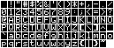

; 6502bench SourceGen v1.7.3
;
; Note I omitted the first two bytes $00 $08 (file code length $0800) from this
; file. This may not have been a great idea, as you'll need to prepend them to
; the assembly output to create a working relocatable object file.
blink_delay .eq $50 {const} ;cursor blink delay
MON_WNDLEFT .eq $20 ;left column of scroll window
MON_WNDWDTH .eq $21 ;width of scroll window
MON_WNDTOP .eq $22 ;top of scroll window
MON_WNDBTM .eq $23 ;bottom of scroll window
MON_CH .eq $24 ;cursor horizontal displacement
MON_CV .eq $25 ;cursor vertical displacement
MON_BASL .eq $28 ;base address for text output (lo)
MON_BASH .eq $29 ;base address for text output (hi)
MON_CSWL .eq $36 ;character output hook (lo)
MON_CSWH .eq $37 ;character output hook (hi)
MON_KSWL .eq $38 ;character input hook (lo)
MON_KSWH .eq $39 ;character input hook (hi)
MON_RNDL .eq $4e ;low byte of KEYIN "random" value
MON_RNDH .eq $4f ;high byte of KEYIN "random" value
DOS_CHARIO .eq $03ea ;jumps to routine that connects DOS KSW/CSW
KBD .eq $c000 ;R last key pressed + 128
KBDSTRB .eq $c010 ;RW keyboard strobe
TXTCLR .eq $c050 ;RW display graphics
MIXCLR .eq $c052 ;RW display full screen
TXTPAGE1 .eq $c054 ;RW display page 1
TXTPAGE2 .eq $c055 ;RW display page 2 (or read/write aux mem)
HIRES .eq $c057 ;RW display hi-res graphics
MON_BELL .eq $fbdd ;Sound bell unconditionally
MON_VTAB .eq $fc22 ;tab to row specified in Acc
MON_VTABZ .eq $fc24
MON_CLREOP .eq $fc42 ;clear screen from cursor to end of page
MON_HOME .eq $fc58 ;clear screen and reset text output to top-left
MON_SCROLL .eq $fc70 ;scroll up one line
MON_CLREOL .eq $fc9c ;clear to end of line
MON_COUT .eq $fded ;print Acc to output device via $36-37
.org $8e00
8e00: 4c 0f 8e hires1_entry jmp start
NOTE: I'm not sure this is true -- it just seems to skip banner output.
; Per the documentation, this secondary entry point is used when the application
; does not want to use hires page 1 at all, only page 2. It skips clearing and
; enabling HIRES page 1.
8e03: 4c 20 8e hires2_entry jmp L8E20
8e06: 0a version .dd1 $0a ;version number * 10
; Poked by the loader to point to the first alternate charset.
; As this defaults to the builtin charset, both ^A 0 and ^A 1
; will display the builtin charset if no alternates are loaded.
8e07: 00 93 first_charset .dd2 builtin_charset
; Vectors for user subroutines A (^O ^Y) and B (^O ^Z).
; The user pokes these with the desired addresses. They are
; also initialized on startup and when defaults are restored,
; so the value here is arbitrary.
8e09: 4c 48 90 userA jmp return ;user subroutine A
8e0c: 4c 48 90 userB jmp return ;user subroutine B
8e0f: 20 20 8e start jsr L8E20
; Output our banner to hires screen.
8e12: a0 00 ldy #$00
8e14: b9 43 8e @loop lda L8E43,y
8e17: 20 ed fd jsr MON_COUT
8e1a: c8 iny
8e1b: c0 1d cpy #$1d
8e1d: 90 f5 bcc @loop
8e1f: 60 rts
8e20: a9 75 L8E20 lda #<ksw_handler
8e22: 85 38 sta MON_KSWL
8e24: a9 8e lda #>ksw_handler
8e26: 85 39 sta MON_KSWH
8e28: a9 19 lda #<csw_handler
8e2a: 85 36 sta MON_CSWL
8e2c: a9 8f lda #>csw_handler
8e2e: 85 37 sta MON_CSWH
8e30: 20 ea 03 jsr DOS_CHARIO ;connect DOS to our handlers
8e33: 2c 52 c0 bit MIXCLR ;select full screen graphics
8e36: 2c 57 c0 bit HIRES ;select hires graphics
8e39: 20 55 91 jsr set_defaults
8e3c: 20 0e 90 jsr L900E
8e3f: 2c 50 c0 bit TXTCLR ;actually enable graphics mode
8e42: 60 rts
8e43: 90 L8E43 .dd1 $90
8e44: c8 c9 ad d2+ .str ↑“HI-RES CHAR GEN VERSION 1.0”,$8d
8e60: 00 esc_state .dd1 $00
8e61: 00 key_state .dd1 $00 ;keypress state. $80 after ^A, $40 after ^O, or $00
8e62: 20 hires_page .dd1 $20 ;$20 (hires1) or $40 (hires2)
8e63: 00 inverse_video .dd1 $00 ;$7f if inverse video active, $00 otherwise
NOTE: Looks like a bitfield. If bit 7 ($80) is set, character will overstrike
(i.e. the background is ignored). If bit 6 ($40) is set, character will
complement (in the shape of its fg or bg). Apparently, "overstrike" and
"transparent" modes ($80) are identical except sourcing from different pages; so
are "complement" and "reverse" ($C0) modes. They are probably named in this odd
way for mnemonic reasons, matching their control chars.
8e64: 00 transparent_mode .dd1 $00 ;$80=overstrike, $C0=complement, $00=no mask
8e65: 00 overlay_mode .dd1 $00 ;$60 to use second screen for overlay (^O ^T/^R)
8e66: 00 wrap_mode .dd1 $00 ;$FF if wrap mode, $00 if scroll
8e67: 00 lower_case .dd1 $00 ;$80=lower case, $00=upper
8e68: 00 93 active_charset .dd2 builtin_charset ;pointer to active charset
8e6a: d0 a0 a0 a0+ var_save .junk 8 ;save 8 bytes above during block mode
8e72: 00 block_mode .dd1 $00 ;$ff=block mode on, $00=off
8e73: 00 block_ch .dd1 $00 ;home col in block mode, or else $00
8e74: 00 block_cv .dd1 $00 ;home row in block mode, or else $00
;
; KSW handler
;
; Wait for a keypress, blinking the cursor (an underscore) while waiting. The
; "random" KEYIN value is updated similarly to the monitor ROM, though at a
; different rate. Also handle ESC state and commands.
;
; On entry, A is the char that was present on the text screen (the caller may
; have overwritten it with a cursor, and standard KSW restores it). Y is the
; horizontal cursor position (MON_CH).
;
; On exit, A is the key pressed. X and Y are preserved.
;
basl .var $2a {addr/1}
bash .var $2b {addr/1}
saveX .var $eb {addr/1}
8e75: 91 28 ksw_handler sta (MON_BASL),y ;restore char to text screen
8e77: 86 eb stx saveX ;we reuse X as a counter
8e79: a5 28 lda MON_BASL ;text screen low byte conveniently
8e7b: 85 2a sta basl ;matches low byte for hires line text*8
8e7d: a5 29 lda MON_BASH ;convert text screen hi byte to hires line
8e7f: 09 1c ora #$1c ;text 04..07 -> 1C..1F
8e81: 0d 62 8e ora hires_page ;-> 3C..3F (page 1) or 5C..5F (page 2)
8e84: 85 2b sta bash ;== 7th line of each 8-line char
8e86: a2 01 ldx #$01 ;initial countdown -- invert almost immediately
8e88: b1 2a lda (basl),y ;grab the 7th (cursor) line to invert it
8e8a: 48 pha ;also save it on the stack
8e8b: e6 4e @jiffy inc MON_RNDL ;count up "random" KEYIN value 0000..FFFF
8e8d: d0 0b bne @checkkey ;check for 8-bit wrap
8e8f: e6 4f inc MON_RNDH ;and propagate to high byte
8e91: ca dex ;did we cycle to $FFFF X times?
8e92: d0 06 bne @checkkey ;no, not yet time to invert cursor
; Blink the cursor.
8e94: 49 7f eor #$7f ;invert cursor line
8e96: 91 2a sta (basl),y ;and write it to screen
8e98: a2 50 ldx #blink_delay ;countdown until next invert
8e9a: 2c 00 c0 @checkkey bit KBD ;key pressed?
8e9d: 10 ec bpl @jiffy ;no, continue cycling
8e9f: 68 pla ;an eternity later, a key is pressed
8ea0: 91 2a sta (basl),y ;restore the original 7th line
8ea2: ba tsx
NOTE: TODO -- why stack lookbehind
8ea3: bd 04 01 lda $0104,x ;??
8ea6: c9 f8 cmp #$f8 ;??
8ea8: ad 00 c0 lda KBD ;get keypress
8eab: 2c 10 c0 bit KBDSTRB ;clear keyboard strobe
8eae: 90 1b bcc @doneX ;if stack value < $f8 (BIT preserved carry)
8eb0: 48 pha ;save keypress
8eb1: 2c 60 8e bit esc_state ;esc flag (bit 7) set earlier?
8eb4: 30 18 bmi esc_char ;yes, this is ESC arg
8eb6: c9 9b cmp #$9b ;ESC pressed now?
8eb8: d0 07 bne @check_cr
8eba: a9 80 lda #$80 ;yes, ESC pressed
8ebc: 8d 60 8e sta esc_state ;set ESC flag for next time
8ebf: d0 09 bne @doneA ;always
8ec1: c9 8d @check_cr cmp #$8d ;return pressed?
8ec3: d0 05 bne @doneA
8ec5: 20 8e 92 jsr clear_hv_eol
NOTE: Need to verify MON_CH is not updated. It's not clear it's absolutely
necessary to restore Y based on the ROM. In particular, look at ESC-@ and cursor
movement.
8ec8: a4 24 @doneY ldy MON_CH ;restore Y (horiz pos)
8eca: 68 @doneA pla ;restore A (the keypress)
8ecb: a6 eb @doneX ldx saveX ;restore X
8ecd: 60 rts
; Handle key pressed in escape mode (in accumulator).
8ece: c9 c9 esc_char cmp #‘I’ | $80
8ed0: 90 0c bcc not_esc_ijkm
8ed2: c9 cd cmp #‘M’ | $80
8ed4: f0 36 beq esc_c_or_m
8ed6: b0 06 bcs not_esc_ijkm
8ed8: c9 cb cmp #‘K’ | $80
8eda: f0 2b beq esc_a_or_k
NOTE: How does doing nothing work for ESC J?
8edc: 90 ec bcc @doneA ;'J' -- do nothing
; Keypress is not IJKM (cursor keys). Disable ESC state going forward.
8ede: 0e 60 8e not_esc_ijkm asl esc_state ;disable escape state ($80->$00)
8ee1: c9 c0 cmp #‘@’ | $80 ;ESC-@ ?
8ee3: d0 06 bne not_esc_null
8ee5: 20 71 92 jsr clear_home
8ee8: 4c c8 8e jmp @doneY
8eeb: c9 c5 not_esc_null cmp #‘E’ | $80
8eed: d0 06 bne not_esc_e
8eef: 20 8e 92 jsr clear_hv_eol
8ef2: 4c c8 8e jmp @doneY
8ef5: c9 c6 not_esc_e cmp #‘F’ | $80
8ef7: d0 06 bne not_esc_f
8ef9: 20 7b 92 jsr clear_hv_eowin
8efc: 4c c8 8e jmp @doneY
8eff: c9 c3 not_esc_f cmp #‘C’ | $80
8f01: f0 09 beq esc_c_or_m
8f03: c9 c1 cmp #‘A’ | $80
8f05: d0 c3 bne @doneA
; After ESC, ABCD and IJKM are cursor movement synonyms, except ABCD exits
; escape mode after one keypress, and IJKM remains in escape mode.
8f07: c8 esc_a_or_k iny
8f08: c4 21 cpy MON_WNDWDTH
8f0a: 90 bc bcc @doneY
8f0c: a4 25 esc_c_or_m ldy MON_CV
8f0e: c8 iny
8f0f: c4 23 cpy MON_WNDBTM
8f11: 90 b5 bcc @doneY
8f13: 20 22 92 jsr scroll
8f16: 4c c8 8e jmp @doneY
saveY .var $35 {addr/1} ;preserve Y
saveX .var $eb {addr/1} ;preserve X
saveA .var $ff {addr/1} ;preserve A
8f19: 85 ff csw_handler sta saveA ;preserve A/X/Y
8f1b: 86 eb stx saveX
8f1d: 84 35 sty saveY
8f1f: 20 29 8f jsr @csw1
8f22: a4 35 ldy saveY
8f24: a6 eb ldx saveX
8f26: a5 ff lda saveA
8f28: 60 rts
8f29: 29 7f @csw1 and #$7f
8f2b: 0e 61 8e asl key_state ;was set to $80 by Ctrl-A keypress
8f2e: b0 57 bcs ctrl_a_arg ;so if carry set after ASL, key is arg to Ctrl-A
8f30: c9 20 cmp #$20 ;control char 00..1f
8f32: 90 03 bcc control_char
8f34: 4c 7c 91 jmp draw_char ;draw char to screen, probably
; Control char 00..1f encountered in output string. Jump to corresponding
; function in table if 00..1a (@-Z), or do nothing (?) if 1b..1f. Note Ctrl-@ is
; not documented.
8f37: c9 1b control_char cmp #$1b
8f39: b0 0a bcs @ret ;1b..1f are not operations
8f3b: 0a asl A ;offset is 2*jump entry
8f3c: aa tax
8f3d: bd 4a 8f lda function_table+1,x ;put jump table entry on stack
8f40: 48 pha
8f41: bd 49 8f lda function_table,x ;for jump via RTS
8f44: 48 pha
8f45: 0e 61 8e @ret asl key_state ;sets carry if contained $80
8f48: 60 rts ;execute function 00..1b
; Jump table used by previous subroutine to handle control character input (with
; low byte -1 for RTS adjustment). Function names are based on the toolkit
; documentation, with the control char ("CB" for ^B) prepended. This is a state
; machine and a couple chars only have meaning after a ^O; those have e.g. "COR"
; for ^O ^R prepended.
8f49: 47 90 function_table .dd2 return-1 ;^@ -- noop
8f4b: 7e 8f .dd2 CA_select_charset-1 ;^A -- select charset
8f4d: aa 8f .dd2 CB_begin_block-1
8f4f: d2 8f .dd2 CC_carriage_return-1
8f51: ed 8f .dd2 CD_delimit_block-1
8f53: 1b 90 .dd2 CE_clear_eol-1
8f55: 23 90 .dd2 CF_clear_eop-1
8f57: dc fb .dd2 MON_BELL-1 ;^G -- sound bell
8f59: 2b 90 .dd2 CH_backspace-1 ;^H move cursor left (no rubout)
8f5b: 40 90 .dd2 CI_inverse_video-1
8f5d: 04 92 .dd2 CJ_linefeed-1
8f5f: 48 90 .dd2 CK_caps_lock-1
8f61: 50 90 .dd2 CL_lower_case-1
8f63: 58 90 .dd2 CM_unknown?-1
8f65: 73 90 .dd2 CN_normal_video-1
8f67: 7b 90 .dd2 CO_option_sel-1
8f69: 8e 90 .dd2 CP_clear_page-1
8f6b: 9f 90 .dd2 CQ_home_cursor-1
8f6d: ae 90 .dd2 COR_reverse-1
8f6f: bb 90 .dd2 CS_shift-1
8f71: c9 90 .dd2 COT_transparent-1
8f73: 47 90 .dd2 return-1 ;Ctrl-U -- noop
8f75: d6 90 .dd2 CV_textwin_ul-1
8f77: 04 91 .dd2 CW_textwin_lr-1
8f79: 47 90 .dd2 return-1 ;Ctrl-X -- noop
8f7b: 2b 91 .dd2 CY_textwin_full-1
8f7d: 52 91 .dd2 CZ_restore_default-1
; Ctrl-A -- select charset.
8f7f: b0 24 CA_select_charset bcs COA_primary_hires1 ;^O ^A -- primary screen 1
8f81: a9 80 lda #$80 ;set flag indicating Ctrl-A was pressed
8f83: 8d 61 8e sta key_state
8f86: 60 rts
;
; Process ^A argument, the charset number to activate. Anything other than 1..9
; selects the builtin charset. 1 selects the lowest charset in memory, 2 selects
; lowest + $0300, and so on.
;
; There is no further bounds check on the charset number, so if you select
; charset 4 when 3 are loaded, you will get garbage. (Since LOADHRCG loads
; charsets directly below HRCG, charsets 4 and 5 would be HRCG code and charset
; 6 is $100 into the builtin charset, which effectively shifts uppercase to
; lowercase!)
;
temp .var $ee {addr/1} ;temp for multiply by 3
8f87: e9 31 ctrl_a_arg sbc #$31 ;convert digit 1..9 ($31..39) to $00..$08
8f89: c9 09 cmp #$09 ;check if char was < 1 or > 9
8f8b: b0 0d bcs @use_internal ;via unsigned cmp >= $09, so $00..$08 are valid
8f8d: ae 07 8e ldx first_charset ;X = low byte of lowest charset in memory
8f90: 85 ee sta temp ;now compute page offset; 3 pages per charset
8f92: 0a asl A
8f93: 65 ee adc temp ;A = A * 3 via temp
8f95: 6d 08 8e adc first_charset+1 ;A = high byte of desired charset
8f98: d0 04 bne @update_charset ;questionable -- tests for zero page?
8f9a: a2 00 @use_internal ldx #<builtin_charset ;select builtin charset, usually when 0 pressed
8f9c: a9 93 lda #>builtin_charset
8f9e: 8e 68 8e @update_charset stx active_charset
8fa1: 8d 69 8e sta active_charset+1
8fa4: 60 rts
8fa5: a9 20 COA_primary_hires1 lda #$20 ;write to hires 1 ($2000) now
8fa7: 8d 62 8e sta hires_page
8faa: 60 rts
8fab: b0 20 CB_begin_block bcs COB_primary_hires2
8fad: 2c 72 8e bit block_mode
8fb0: 30 10 bmi L8FC2
8fb2: a9 ff lda #$ff
8fb4: 8d 72 8e sta block_mode
8fb7: a0 07 ldy #$07 ;length of variable area
8fb9: b9 62 8e L8FB9 lda hires_page,y ;save variables
8fbc: 99 6a 8e sta var_save,y ;for when we delimit block
8fbf: 88 dey
8fc0: 10 f7 bpl L8FB9
8fc2: a5 24 L8FC2 lda MON_CH
8fc4: 8d 73 8e sta block_ch
8fc7: a5 25 lda MON_CV
8fc9: 8d 74 8e sta block_cv
8fcc: 60 rts
8fcd: a9 40 COB_primary_hires2 lda #$40 ;write to hires 2 ($4000) now
8fcf: 8d 62 8e sta hires_page
8fd2: 60 rts
8fd3: b0 0e CC_carriage_return bcs COC_complement ;^O ^C -- complement
8fd5: ad 73 8e lda block_ch
8fd8: c5 24 cmp MON_CH
8fda: 85 24 sta MON_CH
8fdc: f0 02 beq L8FE0
8fde: b0 68 bcs return
8fe0: 4c 05 92 L8FE0 jmp CJ_linefeed
8fe3: a9 c0 COC_complement lda #$c0
8fe5: 8d 64 8e sta transparent_mode
8fe8: a9 00 lda #$00
8fea: 8d 65 8e sta overlay_mode
8fed: 60 rts
8fee: b0 1e CD_delimit_block bcs L900E
8ff0: 2c 72 8e bit block_mode
8ff3: 10 53 bpl return
8ff5: a0 07 ldy #$07 ;length of variable area
8ff7: b9 6a 8e L8FF7 lda var_save,y ;restore original variables
8ffa: 99 62 8e sta hires_page,y ;saved during block begin
8ffd: 88 dey
8ffe: 10 f7 bpl L8FF7
9000: a9 00 lda #$00
9002: 8d 72 8e sta block_mode
9005: 8d 73 8e sta block_ch
9008: a5 22 lda MON_WNDTOP
900a: 8d 74 8e sta block_cv
900d: 60 rts
900e: 2c 54 c0 L900E bit TXTPAGE1
9011: ad 62 8e lda hires_page
9014: c9 40 cmp #$40
9016: d0 30 bne return
9018: 2c 55 c0 bit TXTPAGE2
901b: 60 rts
901c: b0 2a CE_clear_eol bcs return
901e: 20 8e 92 jsr clear_hv_eol
9021: 4c 9c fc jmp MON_CLREOL ;sync the text screen
; Ctrl-F -- clear to end of page.
9024: b0 22 CF_clear_eop bcs return
9026: 20 7b 92 jsr clear_hv_eowin
9029: 4c 42 fc jmp MON_CLREOP ;sync the text screen
; Move the cursor backward one space.
902c: c6 24 CH_backspace dec MON_CH
902e: 10 18 bpl return
9030: a5 21 lda MON_WNDWDTH
9032: 85 24 sta MON_CH
9034: c6 24 dec MON_CH
9036: a5 22 lda MON_WNDTOP
9038: c5 25 cmp MON_CV
903a: b0 0c bcs return
903c: c6 25 dec MON_CV
903e: 4c 22 fc jmp MON_VTAB
9041: b0 05 CI_inverse_video bcs return
9043: a9 7f lda #$7f
9045: 8d 63 8e sta inverse_video
9048: 60 return rts
9049: b0 fd CK_caps_lock bcs return
904b: a9 00 lda #$00
904d: 8d 67 8e sta lower_case
9050: 60 rts
9051: b0 f5 CL_lower_case bcs return
9053: a9 80 lda #$80
9055: 8d 67 8e sta lower_case
9058: 60 rts
9059: ac 00 c0 CM_unknown? ldy KBD
905c: 10 13 bpl L9071
905e: c0 93 cpy #$93
9060: d0 0f bne L9071
9062: 2c 10 c0 bit KBDSTRB
9065: ac 00 c0 L9065 ldy KBD
9068: 10 fb bpl L9065
906a: c0 83 cpy #$83
906c: f0 03 beq L9071
906e: 2c 10 c0 bit KBDSTRB
9071: 4c 01 92 L9071 jmp cr_lf
9074: b0 d2 CN_normal_video bcs return ;^O ^N -- unused
9076: a9 00 lda #$00
9078: 8d 63 8e sta inverse_video
907b: 60 rts
907c: b0 06 CO_option_sel bcs set_overstrike ;second ^O -- overstrike
907e: a9 40 lda #$40 ;first ^O -- record in state machine
9080: 8d 61 8e sta key_state
9083: 60 rts
9084: a9 80 set_overstrike lda #$80
9086: 8d 64 8e sta transparent_mode
9089: a9 00 lda #$00
908b: 8d 65 8e sta overlay_mode
908e: 60 rts
908f: b0 06 CP_clear_page bcs COP_print ;^O ^P -- print
9091: 20 71 92 jsr clear_home ;plain ^P
9094: 4c 58 fc jmp MON_HOME
; Set overwrite ("print") mode, the default mode, where character bg and fg both
; replace underlying graphics.
9097: a9 00 COP_print lda #$00
9099: 8d 64 8e sta transparent_mode
909c: 8d 65 8e sta overlay_mode
909f: 60 rts
90a0: b0 a6 CQ_home_cursor bcs return ;^O ^Q -- unused
90a2: ad 73 8e lda block_ch
90a5: 85 24 sta MON_CH
90a7: ad 74 8e lda block_cv
90aa: 85 25 sta MON_CV
90ac: 4c 24 fc jmp MON_VTABZ
90af: 90 74 COR_reverse bcc return1 ;^R -- unused
90b1: a9 c0 lda #$c0 ;^O ^R
90b3: 8d 64 8e sta transparent_mode
90b6: a9 60 lda #$60
90b8: 8d 65 8e sta overlay_mode
90bb: 60 rts
90bc: b0 06 CS_shift bcs COS_scroll
90be: a9 c0 lda #$c0
90c0: 8d 67 8e sta lower_case
90c3: 60 rts
90c4: a9 00 COS_scroll lda #$00
90c6: 8d 66 8e sta wrap_mode
90c9: 60 rts
90ca: 90 59 COT_transparent bcc return1 ;plain ^T -- unused
90cc: a9 80 lda #$80 ;^O ^T
90ce: 8d 64 8e sta transparent_mode
90d1: a9 60 lda #$60
90d3: 8d 65 8e sta overlay_mode
90d6: 60 rts
90d7: b0 4c CV_textwin_ul bcs return1 ;^O ^V -- unused
90d9: a5 24 lda MON_CH ;window-relative
90db: 65 20 adc MON_WNDLEFT
90dd: c9 28 cmp #40 ;Ensure left is < 40
90df: 90 02 bcc @setleft
90e1: a9 27 lda #39
90e3: 85 20 @setleft sta MON_WNDLEFT
90e5: 38 sec
90e6: a5 21 lda MON_WNDWDTH
90e8: e5 24 sbc MON_CH
90ea: 85 21 sta MON_WNDWDTH
90ec: a9 00 lda #$00
90ee: 85 24 sta MON_CH
90f0: a5 25 lda MON_CV
90f2: c9 18 cmp #24 ;Ensure top is < 24
90f4: 90 02 bcc @settop
90f6: a9 17 lda #23
90f8: 85 22 @settop sta MON_WNDTOP
90fa: 2c 72 8e bit block_mode
90fd: 30 03 bmi @vtab
90ff: 8d 74 8e sta block_cv ;update block top if block mode
9102: 4c 22 fc @vtab jmp MON_VTAB
9105: b0 1f CW_textwin_lr bcs COW_wrap
9107: a5 24 lda MON_CH
9109: 85 21 sta MON_WNDWDTH
910b: 65 20 adc MON_WNDLEFT
910d: c9 28 cmp #40
910f: 90 06 bcc L9117
9111: a9 27 lda #39
9113: e5 20 sbc MON_WNDLEFT
9115: 85 21 sta MON_WNDWDTH
9117: e6 21 L9117 inc MON_WNDWDTH
9119: a5 25 lda MON_CV
911b: c9 18 cmp #24
911d: 90 02 bcc L9121
911f: a9 17 lda #23
9121: 85 23 L9121 sta MON_WNDBTM
9123: e6 23 inc MON_WNDBTM
9125: 60 return1 rts
9126: a9 ff COW_wrap lda #$ff
9128: 8d 66 8e sta wrap_mode
912b: 60 rts
912c: b0 22 CY_textwin_full bcs COY_userA
912e: a5 20 textwin_full lda MON_WNDLEFT
9130: 65 24 adc MON_CH
9132: 85 24 sta MON_CH
9134: a9 00 lda #$00
9136: 85 20 sta MON_WNDLEFT
9138: 85 22 sta MON_WNDTOP
913a: 2c 72 8e bit block_mode
913d: 30 06 bmi @block
913f: 8d 73 8e sta block_ch ;set to $00 when not in block mode
9142: 8d 74 8e sta block_cv ;but should already have been $00 outside block mode
9145: a9 28 @block lda #40
9147: 85 21 sta MON_WNDWDTH
9149: a9 18 lda #24
914b: 85 23 sta MON_WNDBTM
914d: 4c 22 fc jmp MON_VTAB
9150: 4c 09 8e COY_userA jmp userA
9153: b0 24 CZ_restore_default bcs COZ_userB
9155: a9 00 set_defaults lda #$00
9157: a0 12 ldy #$12 ;zero out 13 bytes of variable data
9159: 99 62 8e @zero sta hires_page,y
915c: 88 dey
915d: 10 fa bpl @zero
915f: 20 2e 91 jsr textwin_full
9162: 20 9a 8f jsr @use_internal
9165: 20 a5 8f jsr COA_primary_hires1
; Amusingly, this sets the user jump vectors to a different RTS (return1)
; than the one included in the file (return).
9168: a9 25 lda #<return1
916a: 8d 0a 8e sta userA+1
916d: 8d 0d 8e sta userB+1
9170: a9 91 lda #>return1
9172: 8d 0b 8e sta userA+2
9175: 8d 0e 8e sta userB+2
9178: 60 rts
9179: 4c 0c 8e COZ_userB jmp userB
NOTE: Below, "caps lock" refers to the default state where uppercase and
lowercase are printed without modification (we should call it "unmodified"
state) -- it does not force everything to uppercase. "lowercase mode" prints
both as lowercase. "shift" prints the first char as unmodified, then switches to
lowercase mode.
; Draw char to hires screen and (invisibly) to text screen, scrolling or
; wrapping both as needed.
screen .var $ec {addr/2} ;screen address to read from
charptr .var $ee {addr/2} ;pointer to this char bitmap
917c: 0e 61 8e draw_char asl key_state ;if waiting for arg to ^O,
917f: b0 a4 bcs return1 ; cancel ^O and return
9181: 2c 67 8e bit lower_case ;enforced lowercase?
9184: 10 0f bpl @unmodified ;no, unmodified char
9186: 50 05 bvc @lower ;lowercase, but shift disengaged
9188: 0e 67 8e asl lower_case ;shift engaged; mode $c0->$80 sets followup lowercase
918b: b0 08 bcs @unmodified ;always (unmodified initial char)
; Charsets cover keys $20..$7f, so normally we align the effective char# to
; $00..$5f by subtracting $20 from the key. But if lowercase is enforced, we
; skip the adjustment for A-Z, as lowercase is uppercase+$20.
918d: c9 41 @lower cmp #‘A’
918f: 90 04 bcc @unmodified ;key < A, do not lowercase
9191: c9 5b cmp #‘[’ ;'Z'+1
9193: 90 03 bcc @draw ;A-Z -- make it lowercase
9195: 38 @unmodified sec ;key is unmodified, so
9196: e9 20 sbc #$20 ;align $20..$7f to $00..$5f
; A now contains the index into the charset for this key, $00..$5f. We multiply
; this by 8 (bytes/char) to get the byte offset. Finally we add this offset to
; the active charset address to get the char's bitmap pointer. The bit
; manipulation below is just an 8x8=16bit multiply (really a 3-bit left shift of
; 8 bits into 16) followed by a 16-bit add.
9198: 0a @draw asl A ;Multiply A by 2
9199: 26 ef rol charptr+1 ;shift the overflow into high byte
919b: 0a asl A ;by 4
919c: 26 ef rol charptr+1 ;shift again
919e: 0a asl A ;by 8
919f: 26 ef rol charptr+1 ;shift again
91a1: 18 clc
91a2: 6d 68 8e adc active_charset ;16-bit add (low)
91a5: 85 ee sta charptr ;char bitmap (low)
91a7: a5 ef lda charptr+1 ;get high byte from 8x8 multiply
91a9: 29 07 and #$07 ;limit to the 3 shifted bits
91ab: 6d 69 8e adc active_charset+1 ;16-bit add (high)
91ae: 85 ef sta charptr+1 ;char bitmap (high)
; charptr now points to the bitmap for this char.
91b0: 20 cc 92 jsr compute_cur_base ;get hires addr of first col of this row
91b3: 65 24 adc MON_CH ;A is basl, add column position
91b5: 85 2a sta basl ;basl += col; dest addr to write to
91b7: 85 ec sta screen ;<screen = basl; source addr when combining
91b9: a5 2b lda bash
91bb: 4d 65 8e eor overlay_mode ;eor $60 flips $20 to $40 and vice versa
91be: 85 ed sta screen+1 ;>screen = bash, adjusted for source hires page
91c0: a4 24 ldy MON_CH
91c2: a5 ff lda saveA ;recall original keypress value
91c4: 91 28 sta (MON_BASL),y ;and store to text screen
91c6: a2 00 ldx #$00 ;for (zp) indexing, X always 0
91c8: a0 00 ldy #$00 ;line number in char
; Read a bitmap line, combine it with the source, and write it to the screen.
91ca: b1 ee @charline lda (charptr),y ;load 7-pixel char line
91cc: 4d 63 8e eor inverse_video ;flip all bits if inverted
91cf: 2c 64 8e bit transparent_mode ;check overstrike method
91d2: 10 11 bpl @store ;if bit 7 clear, opaque
91d4: 70 0d bvs @complement ;if bit 6 set
91d6: 2c 63 8e bit inverse_video ;is inverse_video set ($7f)
91d9: 70 04 bvs @invert ;yes, bit 6 set when $7f
91db: 01 ec ora (screen,x) ;combine (OR, blend) with source pixels
91dd: 50 06 bvc @store ;always
91df: 21 ec @invert and (screen,x) ;combine (AND) source with char mask
91e1: 70 02 bvs @store
91e3: 41 ec @complement eor (screen,x) ;flip (XOR) source with char mask (X=0)
91e5: 81 2a @store sta (basl,x) ;update screen (X=0)
91e7: c8 iny ;next char line
91e8: c0 08 cpy #$08
91ea: b0 0d bcs @chardone ;wrote 8 lines, done
91ec: a5 2b lda bash
91ee: 69 04 adc #$04 ;(carry is clear)
91f0: 85 2b sta bash ;next hires line is +$0400
91f2: 4d 65 8e eor overlay_mode ;adjust source addr for overlay mode again
91f5: 85 ed sta screen+1 ;update source addr
91f7: 90 d1 bcc @charline ;always
91f9: e6 24 @chardone inc MON_CH ;update horiz pos
91fb: a5 24 lda MON_CH
91fd: c5 21 cmp MON_WNDWDTH ;did we exceed window width?
91ff: 90 20 bcc @return ;no, we are done
; Move cursor to beginning of line (CR) and then fall through to linefeed (LF).
9201: a9 00 cr_lf lda #$00 ;reset col to beginning of line
9203: 85 24 sta MON_CH
; Move the cursor to the next row, without changing the column -- a linefeed.
; Wrap or scroll as needed if we reached the bottom.
9205: e6 25 CJ_linefeed inc MON_CV ;go to next line
9207: a5 25 lda MON_CV
9209: c5 23 cmp MON_WNDBTM ;check vertical pos
920b: 90 11 bcc @reposition ;still within window
920d: 2c 66 8e bit wrap_mode ;in wrap mode (bit 6)?
9210: 70 08 bvs @wrap ;yes; wrap to top
9212: c6 25 dec MON_CV ;scrolling; adjust pos to last line
9214: 20 22 92 jsr scroll ;scroll hires window
9217: 4c 70 fc jmp MON_SCROLL ;scroll text window and exit
921a: a5 22 @wrap lda MON_WNDTOP ;set vert pos to top of window
921c: 85 25 sta MON_CV
921e: 20 24 fc @reposition jsr MON_VTABZ ;reposition text mode cursor
9221: 60 @return rts
; Scroll hires window up one row, clearing the last row.
9222: a5 22 scroll lda MON_WNDTOP
9224: 48 pha ;save row number
9225: 20 ce 92 jsr compute_base
;
; On the last iteration through the start_eol line loop drawing hires lines 0..7
; of row N, bash is $3c, $3d, $3e or $3f for line 7, and we wind up here again
; for line 0 of row N+1. (bash is not incremented to line 8.) AND #$E3 makes
; that $20, $21, $22, or $23, effectively taking bash back to line 0. Since bash
; always points to the next line (the copy source), we can now store this in
; screen (dest), increasing it by one row. basl/h is then recomputed after
; adding 1 to the row.
;
; Equivalently, a mask of $e3 zeros the 3 bits 4, 3, and 2. Assume these are
; zeroed in the address corresponding to line 0, the first of 8 lines. Then,
; adding $0400 to this address (to reach the next hires line) sets bit 2, and
; adding $0400 7 times to reach line 7 will set bits 4, 3 and 2 (0b111 == 7). So
; AND #$E3 is the same as subtracting $04*7==$1C (0b00011100) from the high
; byte, returning the pointer to line 0.
;
9228: a5 2a @next_row lda basl
922a: 85 ec sta screen
922c: a5 2b lda bash
922e: 29 e3 and #$e3 ;return bash line 7 to line 0
9230: 85 ed sta screen+1 ;inc dest line by 8 (row by 1)
9232: 68 pla ;restore row number
9233: 18 clc
9234: 69 01 adc #$01 ;inc row
9236: c5 23 cmp MON_WNDBTM ;did we hit bottom?
9238: b0 22 bcs @clear_last ;yes, finish up
923a: 48 pha ;save row number (for next loop, above)
923b: 20 ce 92 jsr compute_base ;set basl/bash for next line
923e: a2 07 ldx #$07 ;8 rows, char height
9240: a4 21 @start_eol ldy MON_WNDWDTH ;start at end of window line
9242: 88 dey
9243: b1 2a @copy_byte lda (basl),y ;copy byte
9245: 91 ec sta (screen),y
9247: 88 dey ;and move from right to left
9248: 10 f9 bpl @copy_byte ;until beginning of line
924a: ca dex ;copied all 8 lines?
924b: 30 db bmi @next_row ;yes, next row (basl/h not inc'd)
; Go to next hires line in 8-line group, at +$0400. By line 7 we will have added
; $1C00.
924d: 18 clc
924e: a5 2b lda bash
9250: 69 04 adc #$04
9252: 85 2b sta bash
9254: a5 ed lda screen+1
9256: 69 04 adc #$04
9258: 85 ed sta screen+1
925a: d0 e4 bne @start_eol ;start next row
; Clear the last line to complete the scroll up.
925c: ad 64 8e @clear_last lda transparent_mode
925f: 48 pha
9260: a5 23 lda MON_WNDBTM
9262: e9 01 sbc #$01
9264: a0 00 ldy #$00
9266: 8c 64 8e sty transparent_mode
9269: 20 92 92 jsr clear_eol
926c: 68 pla
926d: 8d 64 8e sta transparent_mode
9270: 60 rts
9271: a5 22 clear_home lda MON_WNDTOP
9273: 85 25 sta MON_CV
9275: a0 00 ldy #$00
9277: 84 24 sty MON_CH
9279: f0 04 beq clear_eowin ;always
927b: a4 24 clear_hv_eowin ldy MON_CH
927d: a5 25 lda MON_CV
; On entry, A/Y are the row/col to begin clearing from. Clears from this
; position to bottom of window.
927f: 48 clear_eowin pha ;preserve line #
9280: 20 92 92 jsr clear_eol
9283: 68 pla
9284: 18 clc
9285: 69 01 adc #$01 ;next line
9287: c5 23 cmp MON_WNDBTM ;until end of window
9289: a0 00 ldy #$00 ;start at col 0
928b: 90 f2 bcc clear_eowin
928d: 60 rts
; Load current H/V pos into Y/A and fall through to clear_eol.
hpos .var $ee {addr/1} ;starting column
928e: a4 24 clear_hv_eol ldy MON_CH
9290: a5 25 lda MON_CV
; Clear line from column Y, row A to end of that line.
9292: 84 ee clear_eol sty hpos ;save starting column
9294: 20 ce 92 jsr compute_base
9297: a2 07 ldx #$07 ;clear 8 hires lines
; If transparent mode is disabled, we just want to clear by writing 7 black
; (normal, $00) or white (inverse, $7f) pixels. This conveniently corresponds
; to the value of inverse_video.
9299: ad 63 8e @clrline lda inverse_video ;load $7f or $00 for opaque mode
929c: 2c 64 8e bit transparent_mode
929f: 10 15 bpl @store ;if opaque, skip to storing
92a1: a5 2a lda basl
92a3: 85 ec sta screen
92a5: a5 2b lda bash
92a7: 4d 65 8e eor overlay_mode
92aa: 85 ed sta screen+1
92ac: b1 ec lda (screen),y
92ae: 2c 64 8e bit transparent_mode
92b1: 50 03 bvc @store
92b3: 4d 63 8e eor inverse_video
92b6: 91 2a @store sta (basl),y
92b8: c8 iny
92b9: c4 21 cpy MON_WNDWDTH ;end of screen?
92bb: 90 dc bcc @clrline ;nope, keep clearing line
92bd: ca dex ;one line complete
92be: 30 0b bmi @done ;if all lines complete, done
92c0: a4 ee ldy hpos ;restore starting column
92c2: a5 2b lda bash
92c4: 18 clc
92c5: 69 04 adc #$04 ;hi byte adds $04 per line
92c7: 85 2b sta bash ;update hi byte of screen address
92c9: d0 ce bne @clrline ;next line -- always
92cb: 60 @done rts
********************************************************************************
* Compute hires base address of a text line, the first line of every 8 line *
* character; i.e. 0, 8, 16, ... The line# is the current text row. On exit, *
* basl/bash has the address, and A has a copy of basl. *
* *
* The high byte is the same for even/odd pairs, so we divide the row by 2; *
* then take this modulo 4 and OR in the hires page. *
* *
* For even/odd pairs the low byte is the same but with bit 7 clear (even) or *
* set (odd). We can use a 12-byte (24/2) table lookup and set bit 7 according *
* to even/odd. *
* *
* The trick is the LSR A preserves this even/odd information in the carry, *
* which is still available when we reach the ROR A, which rotates the carry *
* into the high bit, exactly as we needed. The byte values in the address *
* table are doubled to account for the ROR. So, for the 24 text lines, the *
* hires address base will go *
* *
* 2000, 2080, 2100, 2180, 2200, 2280, 2300, 2380, 0..7 *
* 2028, 20a8, 2128, 21a8, 2228, 22a8, 2328, 23a8, 8..15 *
* 2050, 20d0, 2150, 21d0, 2250, 22d0, 2350, 23d0 16..23 *
* *
* as expected for each 8 line interval on the hires screen. *
********************************************************************************
92cc: a5 25 compute_cur_base lda MON_CV ;get current text row
92ce: 4a compute_base lsr A ;div by 2 *and* set carry if odd
92cf: aa tax ;save for indexing below
92d0: 29 03 and #$03 ;$20,$20,$21,$21,$22,$22,$23,$23, then repeat
92d2: 0d 62 8e ora hires_page ;(or $40,$40,$41... if page 2)
92d5: 85 2b sta bash ;is the high byte
92d7: bd e0 92 lda hires_addr_tbl,x ;index is row/2
; 00, 50, a0 in table become 00, 28, 50 (even rows) or 80, a8, d0 (odd rows).
92da: 6a ror A ;/2; carry from LSR becomes high bit
92db: 65 20 adc MON_WNDLEFT ;adjust for window left (ROR cleared carry)
92dd: 85 2a sta basl ;is the low byte
92df: 60 rts
92e0: 00 00 00 00+ hires_addr_tbl .bulk 0000000050505050a0a0a0a0 ;12 bytes (24 lines)
92ec: b9 a2 a0 d2+ .align $0100 (20 bytes) ;unused area
; Standard monochrome (1bpp) 7x8 font bitmap, 1 byte per character line, 8
; consecutive bytes (lines) per character. High bit is unused. Covers 96 high
; ASCII chars A0-FF.

9300: 00 00 00 00+ builtin_charset .bulk 0000000000000000 ; space
9308: 08 08 08 08+ .bulk 0808080808000800 ; !
9310: 14 14 14 00+ .bulk 1414140000000000 ; "
9318: 14 14 3e 14+ .bulk 14143e143e141400 ; #
9320: 08 3c 0a 1c+ .bulk 083c0a1c281e0800 ; $
9328: 06 26 10 08+ .bulk 0626100804323000 ; etc.
9330: 04 0a 0a 04+ .bulk 040a0a042a122c00
9338: 08 08 08 00+ .bulk 0808080000000000
9340: 08 04 02 02+ .bulk 0804020202040800
9348: 08 10 20 20+ .bulk 0810202020100800
9350: 08 2a 1c 08+ .bulk 082a1c081c2a0800
9358: 00 08 08 3e+ .bulk 0008083e08080000
9360: 00 00 00 00+ .bulk 0000000008080400
9368: 00 00 00 3e+ .bulk 0000003e00000000
9370: 00 00 00 00+ .bulk 0000000000000800
9378: 00 20 10 08+ .bulk 0020100804020000
9380: 1c 22 32 2a+ .bulk 1c22322a26221c00
9388: 08 0c 08 08+ .bulk 080c080808081c00
9390: 1c 22 20 18+ .bulk 1c22201804023e00
9398: 3e 20 10 18+ .bulk 3e20101820221c00
93a0: 10 18 14 12+ .bulk 101814123e101000
93a8: 3e 02 1e 20+ .bulk 3e021e2020221c00
93b0: 38 04 02 1e+ .bulk 3804021e22221c00
93b8: 3e 20 10 08+ .bulk 3e20100804040400
93c0: 1c 22 22 1c+ .bulk 1c22221c22221c00
93c8: 1c 22 22 3c+ .bulk 1c22223c20100e00
93d0: 00 00 08 00+ .bulk 0000080008000000
93d8: 00 00 08 00+ .bulk 0000080008080400
93e0: 10 08 04 02+ .bulk 1008040204081000
93e8: 00 00 3e 00+ .bulk 00003e003e000000
93f0: 04 08 10 20+ .bulk 0408102010080400
93f8: 1c 22 10 08+ .bulk 1c22100808000800
9400: 1c 22 2a 3a+ .bulk 1c222a3a1a023c00
9408: 08 14 22 22+ .bulk 081422223e222200
9410: 1e 22 22 1e+ .bulk 1e22221e22221e00
9418: 1c 22 02 02+ .bulk 1c22020202221c00
9420: 1e 22 22 22+ .bulk 1e22222222221e00
9428: 3e 02 02 1e+ .bulk 3e02021e02023e00
9430: 3e 02 02 1e+ .bulk 3e02021e02020200
9438: 3c 02 02 02+ .bulk 3c02020232223c00
9440: 22 22 22 3e+ .bulk 2222223e22222200
9448: 1c 08 08 08+ .bulk 1c08080808081c00
9450: 20 20 20 20+ .bulk 2020202020221c00
9458: 22 12 0a 06+ .bulk 22120a060a122200
9460: 02 02 02 02+ .bulk 0202020202023e00
9468: 22 36 2a 2a+ .bulk 22362a2a22222200
9470: 22 22 26 2a+ .bulk 2222262a32222200
9478: 1c 22 22 22+ .bulk 1c22222222221c00
9480: 1e 22 22 1e+ .bulk 1e22221e02020200
9488: 1c 22 22 22+ .bulk 1c2222222a122c00
9490: 1e 22 22 1e+ .bulk 1e22221e0a122200
9498: 1c 22 02 1c+ .bulk 1c22021c20221c00
94a0: 3e 08 08 08+ .bulk 3e08080808080800
94a8: 22 22 22 22+ .bulk 2222222222221c00
94b0: 22 22 22 22+ .bulk 2222222222140800
94b8: 22 22 22 2a+ .bulk 2222222a2a362200
94c0: 22 22 14 08+ .bulk 2222140814222200
94c8: 22 22 14 08+ .bulk 2222140808080800
94d0: 3e 20 10 08+ .bulk 3e20100804023e00
94d8: 3e 06 06 06+ .bulk 3e06060606063e00
94e0: 00 02 04 08+ .bulk 0002040810200000
94e8: 3e 30 30 30+ .bulk 3e30303030303e00
94f0: 00 00 08 14+ .bulk 0000081422000000
94f8: 00 00 00 00+ .bulk 000000000000007f
9500: 04 08 10 00+ .bulk 0408100000000000
9508: 00 00 1c 20+ .bulk 00001c203c223c00
9510: 02 02 1e 22+ .bulk 02021e2222221e00
9518: 00 00 3c 02+ .bulk 00003c0202023c00
9520: 20 20 3c 22+ .bulk 20203c2222223c00
9528: 00 00 1c 22+ .bulk 00001c223e023c00
9530: 18 24 04 1e+ .bulk 1824041e04040400
9538: 00 00 1c 22+ .bulk 00001c22223c201c
9540: 02 02 1e 22+ .bulk 02021e2222222200
9548: 08 00 0c 08+ .bulk 08000c0808081c00
9550: 10 00 18 10+ .bulk 100018101010120c
9558: 02 02 22 12+ .bulk 020222120e122200
9560: 0c 08 08 08+ .bulk 0c08080808081c00
9568: 00 00 36 2a+ .bulk 0000362a2a2a2200
9570: 00 00 1e 22+ .bulk 00001e2222222200
9578: 00 00 1c 22+ .bulk 00001c2222221c00
9580: 00 00 1e 22+ .bulk 00001e22221e0202
9588: 00 00 3c 22+ .bulk 00003c22223c2020
9590: 00 00 3a 06+ .bulk 00003a0602020200
9598: 00 00 3c 02+ .bulk 00003c021c201e00
95a0: 04 04 1e 04+ .bulk 04041e0404241800
95a8: 00 00 22 22+ .bulk 0000222222322c00
95b0: 00 00 22 22+ .bulk 0000222222140800
95b8: 00 00 22 22+ .bulk 000022222a2a3600
95c0: 00 00 22 14+ .bulk 0000221408142200
95c8: 00 00 22 22+ .bulk 00002222223c201c
95d0: 00 00 3e 10+ .bulk 00003e1008043e00
95d8: 38 0c 0c 06+ .bulk 380c0c060c0c3800
95e0: 08 08 08 08+ .bulk 0808080808080808
95e8: 0e 18 18 30+ .bulk 0e18183018180e00
95f0: 2c 1a 00 00+ .bulk 2c1a000000000000
95f8: 7f 7f 7f 7f+ .bulk 7f7f7f7f7f7f7f7f
No exported symbols found.